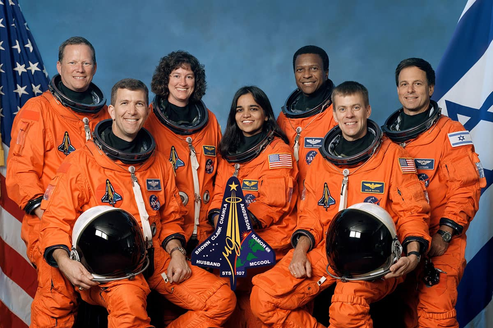
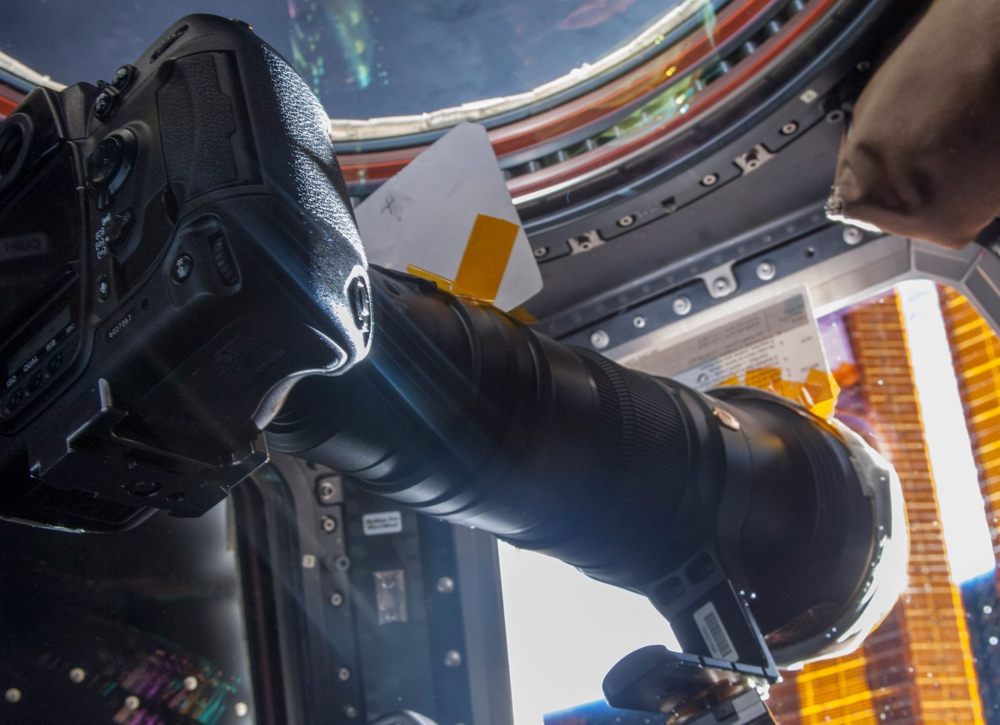

March 1st, 07:00 [REDACTED]
It's time.
January 28th, 2021 17:01

Remembering the crews of Apollo 1, Challenger, and Columbia and thinking of their families on this day of remembrance. May we never forget their sacrifices and the lessons learned as we continue to push the boundaries of human space exploration. #NASARemembers
Thankful today and everyday for all of the work that goes into space travel today to prevent similar horrorific events from happening. Each of these tests and take-offs are better preparing us for a future in which everyone will feel comfortable traveling and living in space. At least for me, I know the safety systems are strong enough to prevent anything terrible that could occur. We're safe here in space, despite how unlikely that seems.
September 14th, 2017 10:28

Taking photographs of the sun on Space Station: I used a 1200mm telephoto lens with a full aperture neutral density solar filter that I had flown up in my personal effects. The older Nikon D2x camera body was used (instead of our newer D3s bodies) because it had smaller pixels and thus gave about 1200 pixels across the solar image diameter instead of 850 (for the D3s). Light sensitivity was not a factor so the older camera body actually gave higher resolution. To point this solar telescope (note, the vertical field of view was about 0.6 degrees and finding the solar disk at 0.5 degrees could be challenging) at the sun I used a simple pinhole projector made from cardboard (old que cards for flying the robotic arm) taped to the lens. I oriented the camera until I saw a sun image on the cardboard cross hairs and then looked through the finder, focused, and took photos. To help stabilize the camera I mounted it on one of our "monopod" brackets.
Now that we're on Mars and my camera made it safely, I'm excited to see just how many amazing photos I can take of our experience. I was concerned about the safety of my camera in flight, but I'm pleased at the results.
june 18, 17 11:47 [REDACTED]
I hate every single person I work with. If we weren't a few short days from taking off and being on the mission of a lifetime, I'd quit right now. But there's been too much work put in by people who matter for me to be concerned.